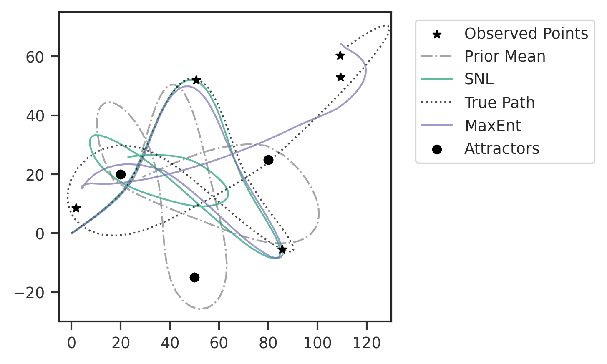
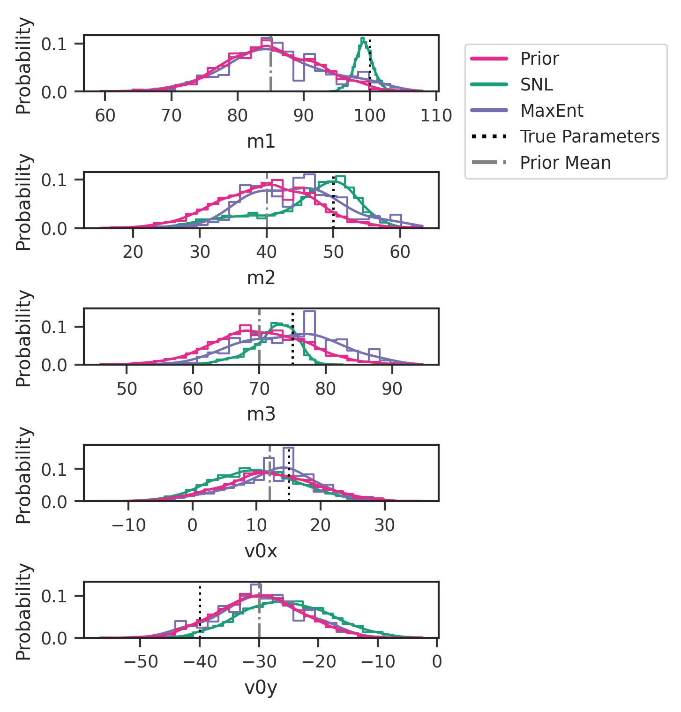

Gravitation Example
import numpy as np
import os
import tensorflow as tf
import torch
import maxent
from sbi_gravitation import GravitySimulator, sim_wrapper, get_observation_points
from torch.distributions.multivariate_normal import MultivariateNormal
from sbi.inference import infer
import scipy
import pandas as pd
import matplotlib.pyplot as plt
from matplotlib.lines import Line2D
import seaborn as sns
from functools import partialmethod
from tqdm import tqdm
tqdm.__init__ = partialmethod(tqdm.__init__, disable=True)
np.random.seed(12656)
sns.set_context("paper")
sns.set_style(
"white",
{
"xtick.bottom": True,
"ytick.left": True,
"xtick.color": "#333333",
"ytick.color": "#333333",
},
)
plt.rcParams["mathtext.fontset"] = "dejavuserif"
colors = ["#1b9e77", "#d95f02", "#7570b3", "#e7298a", "#66a61e"]
2022-04-03 21:45:17.703572: W tensorflow/stream_executor/platform/default/dso_loader.cc:64] Could not load dynamic library 'libcudart.so.11.0'; dlerror: libcudart.so.11.0: cannot open shared object file: No such file or directory; LD_LIBRARY_PATH: /opt/hostedtoolcache/Python/3.8.12/x64/lib
2022-04-03 21:45:17.703611: I tensorflow/stream_executor/cuda/cudart_stub.cc:29] Ignore above cudart dlerror if you do not have a GPU set up on your machine.
# set up true parameters
m1 = 100.0 # solar masses
m2 = 50.0 # solar masses
m3 = 75 # solar masses
G = 1.90809e5 # solar radius / solar mass * (km/s)^2
v0 = np.array([15.0, -40.0]) # km/s
true_params = [m1, m2, m3, v0[0], v0[1]]
# set prior means
prior_means = [85.0, 40.0, 70.0, 12.0, -30.0]
prior_cov = np.eye(5) * 50
# generate true trajectory and apply some noise to it
if os.path.exists("true_trajectory.txt"):
true_traj = np.genfromtxt("true_trajectory.txt")
else:
sim = GravitySimulator(m1, m2, m3, v0, G, random_noise=False)
true_traj = sim.run()
np.savetxt("true_trajectory.txt", true_traj)
if os.path.exists("noisy_trajectory.txt"):
noisy_traj = np.genfromtxt("noisy_trajectory.txt")
else:
sim = GravitySimulator(m1, m2, m3, v0, G, random_noise=True)
noisy_traj = sim.run()
np.savetxt("noisy_trajectory.txt", noisy_traj)
observed_points = get_observation_points(noisy_traj)
observation_summary_stats = observed_points.flatten()
sim = GravitySimulator(m1, m2, m3, v0, G, random_noise=False)
sim.run()
sim.plot_traj()

# perform SNL inference
prior = MultivariateNormal(
loc=torch.as_tensor(prior_means),
covariance_matrix=torch.as_tensor(torch.eye(5) * 50),
)
posterior = infer(
sim_wrapper, prior, method="SNLE", num_simulations=2048, num_workers=16
)
Training neural network. Epochs trained: 1
Training neural network. Epochs trained: 2
Training neural network. Epochs trained: 3
Training neural network. Epochs trained: 4
Training neural network. Epochs trained: 5
Training neural network. Epochs trained: 6
Training neural network. Epochs trained: 7
Training neural network. Epochs trained: 8
Training neural network. Epochs trained: 9
Training neural network. Epochs trained: 10
Training neural network. Epochs trained: 11
Training neural network. Epochs trained: 12
Training neural network. Epochs trained: 13
Training neural network. Epochs trained: 14
Training neural network. Epochs trained: 15
Training neural network. Epochs trained: 16
Training neural network. Epochs trained: 17
Training neural network. Epochs trained: 18
Training neural network. Epochs trained: 19
Training neural network. Epochs trained: 20
Training neural network. Epochs trained: 21
Training neural network. Epochs trained: 22
Training neural network. Epochs trained: 23
Training neural network. Epochs trained: 24
Training neural network. Epochs trained: 25
Training neural network. Epochs trained: 26
Training neural network. Epochs trained: 27
Training neural network. Epochs trained: 28
Training neural network. Epochs trained: 29
Training neural network. Epochs trained: 30
Training neural network. Epochs trained: 31
Training neural network. Epochs trained: 32
Training neural network. Epochs trained: 33
Training neural network. Epochs trained: 34
Training neural network. Epochs trained: 35
Training neural network. Epochs trained: 36
Training neural network. Epochs trained: 37
Training neural network. Epochs trained: 38
Training neural network. Epochs trained: 39
Training neural network. Epochs trained: 40
Training neural network. Epochs trained: 41
Training neural network. Epochs trained: 42
Training neural network. Epochs trained: 43
Training neural network. Epochs trained: 44
Training neural network. Epochs trained: 45
Training neural network. Epochs trained: 46
Training neural network. Epochs trained: 47
Training neural network. Epochs trained: 48
Training neural network. Epochs trained: 49
Training neural network. Epochs trained: 50
Training neural network. Epochs trained: 51
Training neural network. Epochs trained: 52
Training neural network. Epochs trained: 53
Training neural network. Epochs trained: 54
Training neural network. Epochs trained: 55
Training neural network. Epochs trained: 56
Training neural network. Epochs trained: 57
Training neural network. Epochs trained: 58
Training neural network. Epochs trained: 59
Training neural network. Epochs trained: 60
Training neural network. Epochs trained: 61
Training neural network. Epochs trained: 62
Training neural network. Epochs trained: 63
Training neural network. Epochs trained: 64
Training neural network. Epochs trained: 65
Training neural network. Epochs trained: 66
Training neural network. Epochs trained: 67
Training neural network. Epochs trained: 68
Training neural network. Epochs trained: 69
Training neural network. Epochs trained: 70
Training neural network. Epochs trained: 71
Training neural network. Epochs trained: 72
Training neural network. Epochs trained: 73
Training neural network. Epochs trained: 74
Training neural network. Epochs trained: 75
Training neural network. Epochs trained: 76
Training neural network. Epochs trained: 77
Training neural network. Epochs trained: 78
Training neural network. Epochs trained: 79
Training neural network. Epochs trained: 80
Training neural network. Epochs trained: 81
Training neural network. Epochs trained: 82
Training neural network. Epochs trained: 83
Training neural network. Epochs trained: 84
Training neural network. Epochs trained: 85
Training neural network. Epochs trained: 86
Training neural network. Epochs trained: 87
Training neural network. Epochs trained: 88
Training neural network. Epochs trained: 89
Training neural network. Epochs trained: 90
Training neural network. Epochs trained: 91
Training neural network. Epochs trained: 92
Training neural network. Epochs trained: 93
Training neural network. Epochs trained: 94
Training neural network. Epochs trained: 95
Training neural network. Epochs trained: 96
Training neural network. Epochs trained: 97
Training neural network. Epochs trained: 98
Training neural network. Epochs trained: 99
Training neural network. Epochs trained: 100
Training neural network. Epochs trained: 101
Training neural network. Epochs trained: 102
Training neural network. Epochs trained: 103
Training neural network. Epochs trained: 104
Training neural network. Epochs trained: 105
Training neural network. Epochs trained: 106
Training neural network. Epochs trained: 107
Training neural network. Epochs trained: 108
Training neural network. Epochs trained: 109
Training neural network. Epochs trained: 110
Training neural network. Epochs trained: 111
Training neural network. Epochs trained: 112
Training neural network. Epochs trained: 113
Training neural network. Epochs trained: 114
Training neural network. Epochs trained: 115
Training neural network. Epochs trained: 116
Training neural network. Epochs trained: 117
Training neural network. Epochs trained: 118
Training neural network. Epochs trained: 119
Training neural network. Epochs trained: 120
Training neural network. Epochs trained: 121
Training neural network. Epochs trained: 122
Training neural network. Epochs trained: 123
Training neural network. Epochs trained: 124
Training neural network. Epochs trained: 125
Training neural network. Epochs trained: 126
Training neural network. Epochs trained: 127
Training neural network. Epochs trained: 128
Training neural network. Epochs trained: 129
Training neural network. Epochs trained: 130
Training neural network. Epochs trained: 131
Training neural network. Epochs trained: 132
Training neural network. Epochs trained: 133
Training neural network. Epochs trained: 134
Training neural network. Epochs trained: 135
Training neural network. Epochs trained: 136
Training neural network. Epochs trained: 137
Training neural network. Epochs trained: 138
Training neural network. Epochs trained: 139
Training neural network. Epochs trained: 140
Training neural network. Epochs trained: 141
Training neural network. Epochs trained: 142
Training neural network. Epochs trained: 143
Training neural network. Epochs trained: 144
Training neural network. Epochs trained: 145
Training neural network. Epochs trained: 146
Training neural network. Epochs trained: 147
Training neural network. Epochs trained: 148
Training neural network. Epochs trained: 149
Training neural network. Epochs trained: 150
Training neural network. Epochs trained: 151
Training neural network. Epochs trained: 152
Training neural network. Epochs trained: 153
Training neural network. Epochs trained: 154
Training neural network. Epochs trained: 155
Training neural network. Epochs trained: 156
Training neural network. Epochs trained: 157
Training neural network. Epochs trained: 158
Training neural network. Epochs trained: 159
Training neural network. Epochs trained: 160
Training neural network. Epochs trained: 161
Training neural network. Epochs trained: 162
Training neural network. Epochs trained: 163
Training neural network. Epochs trained: 164
Training neural network. Epochs trained: 165
Training neural network. Epochs trained: 166
Training neural network. Epochs trained: 167
Training neural network. Epochs trained: 168
Training neural network. Epochs trained: 169
Training neural network. Epochs trained: 170
Training neural network. Epochs trained: 171
Training neural network. Epochs trained: 172
Training neural network. Epochs trained: 173
Training neural network. Epochs trained: 174
Training neural network. Epochs trained: 175
Training neural network. Epochs trained: 176
Training neural network. Epochs trained: 177
Training neural network. Epochs trained: 178
Training neural network. Epochs trained: 179
Neural network successfully converged after 179 epochs.
# sample from SNL posterior
samples = posterior.sample((2000,), x=observation_summary_stats)
snl_data = np.array(samples)
np.savetxt("wide_prior_samples.txt", snl_data)
Running 1 MCMC chains in 1 batches.: 0%| | 0/1 [00:00<?, ?it/s]
0%| | 0/50 [00:00<?, ?it/s]
Tuning bracket width...: 0%| | 0/50 [00:00<?, ?it/s]
Tuning bracket width...: 20%|██ | 10/50 [00:02<00:09, 4.31it/s]
Tuning bracket width...: 40%|████ | 20/50 [00:02<00:03, 8.05it/s]
Tuning bracket width...: 60%|██████ | 30/50 [00:03<00:01, 10.64it/s]
Tuning bracket width...: 80%|████████ | 40/50 [00:04<00:00, 12.22it/s]
Tuning bracket width...: 100%|██████████| 50/50 [00:04<00:00, 13.75it/s]
Tuning bracket width...: 100%|██████████| 50/50 [00:04<00:00, 10.89it/s]
0%| | 0/10 [00:00<?, ?it/s]
Generating samples: 0%| | 0/10 [00:00<?, ?it/s]
Generating samples: 100%|██████████| 10/10 [00:05<00:00, 1.92it/s]
Generating samples: 100%|██████████| 10/10 [00:05<00:00, 1.92it/s]
0%| | 0/2000 [00:00<?, ?it/s]
Generating samples: 0%| | 0/2000 [00:00<?, ?it/s]
Generating samples: 0%| | 10/2000 [00:05<17:20, 1.91it/s]
Generating samples: 1%| | 20/2000 [00:10<17:21, 1.90it/s]
Generating samples: 2%|▏ | 30/2000 [00:15<17:25, 1.88it/s]
Generating samples: 2%|▏ | 40/2000 [00:21<17:10, 1.90it/s]
Generating samples: 2%|▎ | 50/2000 [00:26<16:46, 1.94it/s]
Generating samples: 3%|▎ | 60/2000 [00:31<16:44, 1.93it/s]
Generating samples: 4%|▎ | 70/2000 [00:36<16:41, 1.93it/s]
Generating samples: 4%|▍ | 80/2000 [00:41<16:31, 1.94it/s]
Generating samples: 4%|▍ | 90/2000 [00:46<16:25, 1.94it/s]
Generating samples: 5%|▌ | 100/2000 [00:51<16:23, 1.93it/s]
Generating samples: 6%|▌ | 110/2000 [00:57<16:24, 1.92it/s]
Generating samples: 6%|▌ | 120/2000 [01:02<16:16, 1.93it/s]
Generating samples: 6%|▋ | 130/2000 [01:07<16:08, 1.93it/s]
Generating samples: 7%|▋ | 140/2000 [01:12<16:04, 1.93it/s]
Generating samples: 8%|▊ | 150/2000 [01:17<15:59, 1.93it/s]
Generating samples: 8%|▊ | 160/2000 [01:23<15:52, 1.93it/s]
Generating samples: 8%|▊ | 170/2000 [01:28<15:50, 1.93it/s]
Generating samples: 9%|▉ | 180/2000 [01:33<15:40, 1.94it/s]
Generating samples: 10%|▉ | 190/2000 [01:38<15:32, 1.94it/s]
Generating samples: 10%|█ | 200/2000 [01:43<15:23, 1.95it/s]
Generating samples: 10%|█ | 210/2000 [01:48<15:17, 1.95it/s]
Generating samples: 11%|█ | 220/2000 [01:53<15:12, 1.95it/s]
Generating samples: 12%|█▏ | 230/2000 [01:58<15:05, 1.95it/s]
Generating samples: 12%|█▏ | 240/2000 [02:04<15:07, 1.94it/s]
Generating samples: 12%|█▎ | 250/2000 [02:09<14:59, 1.95it/s]
Generating samples: 13%|█▎ | 260/2000 [02:14<14:58, 1.94it/s]
Generating samples: 14%|█▎ | 270/2000 [02:19<14:49, 1.94it/s]
Generating samples: 14%|█▍ | 280/2000 [02:24<14:42, 1.95it/s]
Generating samples: 14%|█▍ | 290/2000 [02:29<14:40, 1.94it/s]
Generating samples: 15%|█▌ | 300/2000 [02:35<14:34, 1.94it/s]
Generating samples: 16%|█▌ | 310/2000 [02:40<14:27, 1.95it/s]
Generating samples: 16%|█▌ | 320/2000 [02:45<14:28, 1.93it/s]
Generating samples: 16%|█▋ | 330/2000 [02:50<14:19, 1.94it/s]
Generating samples: 17%|█▋ | 340/2000 [02:55<14:26, 1.92it/s]
Generating samples: 18%|█▊ | 350/2000 [03:01<14:27, 1.90it/s]
Generating samples: 18%|█▊ | 360/2000 [03:06<14:32, 1.88it/s]
Generating samples: 18%|█▊ | 370/2000 [03:11<14:26, 1.88it/s]
Generating samples: 19%|█▉ | 380/2000 [03:17<14:13, 1.90it/s]
Generating samples: 20%|█▉ | 390/2000 [03:22<14:08, 1.90it/s]
Generating samples: 20%|██ | 400/2000 [03:27<13:56, 1.91it/s]
Generating samples: 20%|██ | 410/2000 [03:32<13:49, 1.92it/s]
Generating samples: 21%|██ | 420/2000 [03:37<13:36, 1.94it/s]
Generating samples: 22%|██▏ | 430/2000 [03:42<13:25, 1.95it/s]
Generating samples: 22%|██▏ | 440/2000 [03:48<13:22, 1.95it/s]
Generating samples: 22%|██▎ | 450/2000 [03:53<13:18, 1.94it/s]
Generating samples: 23%|██▎ | 460/2000 [03:58<13:14, 1.94it/s]
Generating samples: 24%|██▎ | 470/2000 [04:03<13:13, 1.93it/s]
Generating samples: 24%|██▍ | 480/2000 [04:08<13:09, 1.92it/s]
Generating samples: 24%|██▍ | 490/2000 [04:13<12:59, 1.94it/s]
Generating samples: 25%|██▌ | 500/2000 [04:19<12:51, 1.94it/s]
Generating samples: 26%|██▌ | 510/2000 [04:24<12:45, 1.95it/s]
Generating samples: 26%|██▌ | 520/2000 [04:29<12:43, 1.94it/s]
Generating samples: 26%|██▋ | 530/2000 [04:34<12:38, 1.94it/s]
Generating samples: 27%|██▋ | 540/2000 [04:39<12:33, 1.94it/s]
Generating samples: 28%|██▊ | 550/2000 [04:45<12:47, 1.89it/s]
Generating samples: 28%|██▊ | 560/2000 [04:50<12:50, 1.87it/s]
Generating samples: 28%|██▊ | 570/2000 [04:55<12:36, 1.89it/s]
Generating samples: 29%|██▉ | 580/2000 [05:01<12:25, 1.90it/s]
Generating samples: 30%|██▉ | 590/2000 [05:06<12:13, 1.92it/s]
Generating samples: 30%|███ | 600/2000 [05:11<12:12, 1.91it/s]
Generating samples: 30%|███ | 610/2000 [05:16<12:01, 1.93it/s]
Generating samples: 31%|███ | 620/2000 [05:21<11:56, 1.93it/s]
Generating samples: 32%|███▏ | 630/2000 [05:27<11:54, 1.92it/s]
Generating samples: 32%|███▏ | 640/2000 [05:32<11:52, 1.91it/s]
Generating samples: 32%|███▎ | 650/2000 [05:37<11:43, 1.92it/s]
Generating samples: 33%|███▎ | 660/2000 [05:42<11:34, 1.93it/s]
Generating samples: 34%|███▎ | 670/2000 [05:47<11:25, 1.94it/s]
Generating samples: 34%|███▍ | 680/2000 [05:52<11:22, 1.93it/s]
Generating samples: 34%|███▍ | 690/2000 [05:58<11:24, 1.91it/s]
Generating samples: 35%|███▌ | 700/2000 [06:03<11:12, 1.93it/s]
Generating samples: 36%|███▌ | 710/2000 [06:08<11:03, 1.94it/s]
Generating samples: 36%|███▌ | 720/2000 [06:13<11:02, 1.93it/s]
Generating samples: 36%|███▋ | 730/2000 [06:18<10:54, 1.94it/s]
Generating samples: 37%|███▋ | 740/2000 [06:23<10:47, 1.95it/s]
Generating samples: 38%|███▊ | 750/2000 [06:29<10:57, 1.90it/s]
Generating samples: 38%|███▊ | 760/2000 [06:34<10:47, 1.92it/s]
Generating samples: 38%|███▊ | 770/2000 [06:39<10:37, 1.93it/s]
Generating samples: 39%|███▉ | 780/2000 [06:44<10:29, 1.94it/s]
Generating samples: 40%|███▉ | 790/2000 [06:49<10:26, 1.93it/s]
Generating samples: 40%|████ | 800/2000 [06:54<10:16, 1.95it/s]
Generating samples: 40%|████ | 810/2000 [07:00<10:09, 1.95it/s]
Generating samples: 41%|████ | 820/2000 [07:05<10:03, 1.95it/s]
Generating samples: 42%|████▏ | 830/2000 [07:10<10:00, 1.95it/s]
Generating samples: 42%|████▏ | 840/2000 [07:15<09:53, 1.96it/s]
Generating samples: 42%|████▎ | 850/2000 [07:20<09:59, 1.92it/s]
Generating samples: 43%|████▎ | 860/2000 [07:25<09:50, 1.93it/s]
Generating samples: 44%|████▎ | 870/2000 [07:31<09:46, 1.93it/s]
Generating samples: 44%|████▍ | 880/2000 [07:36<09:41, 1.93it/s]
Generating samples: 44%|████▍ | 890/2000 [07:41<09:38, 1.92it/s]
Generating samples: 45%|████▌ | 900/2000 [07:46<09:34, 1.92it/s]
Generating samples: 46%|████▌ | 910/2000 [07:52<09:30, 1.91it/s]
Generating samples: 46%|████▌ | 920/2000 [07:57<09:22, 1.92it/s]
Generating samples: 46%|████▋ | 930/2000 [08:02<09:14, 1.93it/s]
Generating samples: 47%|████▋ | 940/2000 [08:07<09:09, 1.93it/s]
Generating samples: 48%|████▊ | 950/2000 [08:12<09:02, 1.94it/s]
Generating samples: 48%|████▊ | 960/2000 [08:17<08:56, 1.94it/s]
Generating samples: 48%|████▊ | 970/2000 [08:22<08:50, 1.94it/s]
Generating samples: 49%|████▉ | 980/2000 [08:28<08:47, 1.93it/s]
Generating samples: 50%|████▉ | 990/2000 [08:33<08:39, 1.94it/s]
Generating samples: 50%|█████ | 1000/2000 [08:38<08:36, 1.94it/s]
Generating samples: 50%|█████ | 1010/2000 [08:43<08:31, 1.93it/s]
Generating samples: 51%|█████ | 1020/2000 [08:48<08:26, 1.94it/s]
Generating samples: 52%|█████▏ | 1030/2000 [08:54<08:24, 1.92it/s]
Generating samples: 52%|█████▏ | 1040/2000 [08:59<08:17, 1.93it/s]
Generating samples: 52%|█████▎ | 1050/2000 [09:04<08:12, 1.93it/s]
Generating samples: 53%|█████▎ | 1060/2000 [09:09<08:04, 1.94it/s]
Generating samples: 54%|█████▎ | 1070/2000 [09:14<07:58, 1.94it/s]
Generating samples: 54%|█████▍ | 1080/2000 [09:19<07:53, 1.94it/s]
Generating samples: 55%|█████▍ | 1090/2000 [09:24<07:48, 1.94it/s]
Generating samples: 55%|█████▌ | 1100/2000 [09:30<07:41, 1.95it/s]
Generating samples: 56%|█████▌ | 1110/2000 [09:35<07:43, 1.92it/s]
Generating samples: 56%|█████▌ | 1120/2000 [09:40<07:35, 1.93it/s]
Generating samples: 56%|█████▋ | 1130/2000 [09:45<07:31, 1.93it/s]
Generating samples: 57%|█████▋ | 1140/2000 [09:50<07:24, 1.93it/s]
Generating samples: 57%|█████▊ | 1150/2000 [09:55<07:18, 1.94it/s]
Generating samples: 58%|█████▊ | 1160/2000 [10:01<07:13, 1.94it/s]
Generating samples: 58%|█████▊ | 1170/2000 [10:06<07:06, 1.95it/s]
Generating samples: 59%|█████▉ | 1180/2000 [10:11<07:01, 1.95it/s]
Generating samples: 60%|█████▉ | 1190/2000 [10:16<06:59, 1.93it/s]
Generating samples: 60%|██████ | 1200/2000 [10:22<07:06, 1.88it/s]
Generating samples: 60%|██████ | 1210/2000 [10:27<07:06, 1.85it/s]
Generating samples: 61%|██████ | 1220/2000 [10:33<06:58, 1.86it/s]
Generating samples: 62%|██████▏ | 1230/2000 [10:38<06:48, 1.89it/s]
Generating samples: 62%|██████▏ | 1240/2000 [10:43<06:41, 1.89it/s]
Generating samples: 62%|██████▎ | 1250/2000 [10:48<06:32, 1.91it/s]
Generating samples: 63%|██████▎ | 1260/2000 [10:53<06:27, 1.91it/s]
Generating samples: 64%|██████▎ | 1270/2000 [10:58<06:18, 1.93it/s]
Generating samples: 64%|██████▍ | 1280/2000 [11:04<06:10, 1.94it/s]
Generating samples: 64%|██████▍ | 1290/2000 [11:09<06:05, 1.94it/s]
Generating samples: 65%|██████▌ | 1300/2000 [11:14<06:03, 1.93it/s]
Generating samples: 66%|██████▌ | 1310/2000 [11:19<05:58, 1.92it/s]
Generating samples: 66%|██████▌ | 1320/2000 [11:24<05:53, 1.92it/s]
Generating samples: 66%|██████▋ | 1330/2000 [11:30<05:49, 1.92it/s]
Generating samples: 67%|██████▋ | 1340/2000 [11:35<05:42, 1.93it/s]
Generating samples: 68%|██████▊ | 1350/2000 [11:40<05:38, 1.92it/s]
Generating samples: 68%|██████▊ | 1360/2000 [11:45<05:31, 1.93it/s]
Generating samples: 68%|██████▊ | 1370/2000 [11:50<05:24, 1.94it/s]
Generating samples: 69%|██████▉ | 1380/2000 [11:55<05:16, 1.96it/s]
Generating samples: 70%|██████▉ | 1390/2000 [12:00<05:11, 1.96it/s]
Generating samples: 70%|███████ | 1400/2000 [12:05<05:07, 1.95it/s]
Generating samples: 70%|███████ | 1410/2000 [12:11<05:03, 1.94it/s]
Generating samples: 71%|███████ | 1420/2000 [12:16<04:58, 1.94it/s]
Generating samples: 72%|███████▏ | 1430/2000 [12:21<04:52, 1.95it/s]
Generating samples: 72%|███████▏ | 1440/2000 [12:26<04:45, 1.96it/s]
Generating samples: 72%|███████▎ | 1450/2000 [12:31<04:38, 1.98it/s]
Generating samples: 73%|███████▎ | 1460/2000 [12:36<04:30, 1.99it/s]
Generating samples: 74%|███████▎ | 1470/2000 [12:41<04:26, 1.99it/s]
Generating samples: 74%|███████▍ | 1480/2000 [12:46<04:22, 1.98it/s]
Generating samples: 74%|███████▍ | 1490/2000 [12:51<04:18, 1.97it/s]
Generating samples: 75%|███████▌ | 1500/2000 [12:56<04:13, 1.97it/s]
Generating samples: 76%|███████▌ | 1510/2000 [13:01<04:07, 1.98it/s]
Generating samples: 76%|███████▌ | 1520/2000 [13:06<04:01, 1.99it/s]
Generating samples: 76%|███████▋ | 1530/2000 [13:11<03:57, 1.98it/s]
Generating samples: 77%|███████▋ | 1540/2000 [13:16<03:51, 1.99it/s]
Generating samples: 78%|███████▊ | 1550/2000 [13:21<03:46, 1.99it/s]
Generating samples: 78%|███████▊ | 1560/2000 [13:26<03:41, 1.99it/s]
Generating samples: 78%|███████▊ | 1570/2000 [13:31<03:37, 1.98it/s]
Generating samples: 79%|███████▉ | 1580/2000 [13:36<03:31, 1.98it/s]
Generating samples: 80%|███████▉ | 1590/2000 [13:42<03:27, 1.97it/s]
Generating samples: 80%|████████ | 1600/2000 [13:47<03:22, 1.98it/s]
Generating samples: 80%|████████ | 1610/2000 [13:52<03:16, 1.98it/s]
Generating samples: 81%|████████ | 1620/2000 [13:57<03:11, 1.99it/s]
Generating samples: 82%|████████▏ | 1630/2000 [14:01<03:04, 2.01it/s]
Generating samples: 82%|████████▏ | 1640/2000 [14:06<02:58, 2.02it/s]
Generating samples: 82%|████████▎ | 1650/2000 [14:11<02:54, 2.01it/s]
Generating samples: 83%|████████▎ | 1660/2000 [14:16<02:49, 2.01it/s]
Generating samples: 84%|████████▎ | 1670/2000 [14:21<02:44, 2.01it/s]
Generating samples: 84%|████████▍ | 1680/2000 [14:26<02:39, 2.01it/s]
Generating samples: 84%|████████▍ | 1690/2000 [14:31<02:33, 2.01it/s]
Generating samples: 85%|████████▌ | 1700/2000 [14:36<02:28, 2.01it/s]
Generating samples: 86%|████████▌ | 1710/2000 [14:41<02:23, 2.02it/s]
Generating samples: 86%|████████▌ | 1720/2000 [14:46<02:17, 2.03it/s]
Generating samples: 86%|████████▋ | 1730/2000 [14:51<02:12, 2.04it/s]
Generating samples: 87%|████████▋ | 1740/2000 [14:56<02:08, 2.03it/s]
Generating samples: 88%|████████▊ | 1750/2000 [15:01<02:03, 2.02it/s]
Generating samples: 88%|████████▊ | 1760/2000 [15:06<01:57, 2.04it/s]
Generating samples: 88%|████████▊ | 1770/2000 [15:10<01:52, 2.05it/s]
Generating samples: 89%|████████▉ | 1780/2000 [15:15<01:47, 2.04it/s]
Generating samples: 90%|████████▉ | 1790/2000 [15:20<01:42, 2.04it/s]
Generating samples: 90%|█████████ | 1800/2000 [15:25<01:38, 2.03it/s]
Generating samples: 90%|█████████ | 1810/2000 [15:30<01:34, 2.02it/s]
Generating samples: 91%|█████████ | 1820/2000 [15:36<01:31, 1.97it/s]
Generating samples: 92%|█████████▏| 1830/2000 [15:41<01:27, 1.93it/s]
Generating samples: 92%|█████████▏| 1840/2000 [15:46<01:21, 1.95it/s]
Generating samples: 92%|█████████▎| 1850/2000 [15:51<01:16, 1.97it/s]
Generating samples: 93%|█████████▎| 1860/2000 [15:56<01:10, 1.99it/s]
Generating samples: 94%|█████████▎| 1870/2000 [16:01<01:04, 2.02it/s]
Generating samples: 94%|█████████▍| 1880/2000 [16:06<00:59, 2.02it/s]
Generating samples: 94%|█████████▍| 1890/2000 [16:10<00:53, 2.04it/s]
Generating samples: 95%|█████████▌| 1900/2000 [16:15<00:48, 2.05it/s]
Generating samples: 96%|█████████▌| 1910/2000 [16:20<00:43, 2.06it/s]
Generating samples: 96%|█████████▌| 1920/2000 [16:25<00:38, 2.06it/s]
Generating samples: 96%|█████████▋| 1930/2000 [16:30<00:33, 2.06it/s]
Generating samples: 97%|█████████▋| 1940/2000 [16:35<00:29, 2.06it/s]
Generating samples: 98%|█████████▊| 1950/2000 [16:40<00:24, 2.05it/s]
Generating samples: 98%|█████████▊| 1960/2000 [16:45<00:19, 2.04it/s]
Generating samples: 98%|█████████▊| 1970/2000 [16:49<00:14, 2.05it/s]
Generating samples: 99%|█████████▉| 1980/2000 [16:54<00:09, 2.05it/s]
Generating samples: 100%|█████████▉| 1990/2000 [16:59<00:04, 2.05it/s]
Generating samples: 100%|██████████| 2000/2000 [17:04<00:00, 2.03it/s]
Generating samples: 100%|██████████| 2000/2000 [17:04<00:00, 1.95it/s]
Running 1 MCMC chains in 1 batches.: 100%|██████████| 1/1 [17:14<00:00, 1034.53s/it]
Running 1 MCMC chains in 1 batches.: 100%|██████████| 1/1 [17:14<00:00, 1034.53s/it]
# set up restraints for maxent
# restraint structure: [value, uncertainty, indices... ]
restraints = []
for i, point in enumerate(observed_points):
value1 = point[0]
value2 = point[1]
uncertainty = 25
index = 20 * i + 19 # based on how we slice in get_observation_points()
restraints.append([value1, uncertainty, index, 0])
restraints.append([value2, uncertainty, index, 1])
# set up maxent restraints
maxent_restraints = []
for i in range(len(restraints)):
traj_index = tuple(restraints[i][2:])
value = restraints[i][0]
uncertainty = restraints[i][1]
p = maxent.EmptyPrior()
r = maxent.Restraint(lambda traj, i=traj_index: traj[i], value, p)
maxent_restraints.append(r)
# sample from prior for maxent
if os.path.exists("maxent_prior_samples.npy"):
prior_dist = np.load("maxent_prior_samples.npy")
else:
prior_dist = np.random.multivariate_normal(prior_means, prior_cov, size=2048)
np.save("maxent_prior_samples.npy", prior_dist)
# generate trajectories for maxent from prior samples
trajs = np.zeros([prior_dist.shape[0], 100, 2])
for i, sample in enumerate(prior_dist):
m1, m2, m3, v0 = sample[0], sample[1], sample[2], sample[3:]
sim = GravitySimulator(m1, m2, m3, v0, random_noise=False)
traj = sim.run()
trajs[i] = traj
maxent_trajs = trajs
np.save("maxent_raw_trajectories.npy", trajs)
# run maxent on trajectories
batch_size = prior_dist.shape[0]
model = maxent.MaxentModel(maxent_restraints)
model.compile(tf.keras.optimizers.Adam(1e-4), "mean_squared_error")
# short burn-in
h = model.fit(trajs, batch_size=batch_size, epochs=5000, verbose=0)
# restart to reset learning rate
h = model.fit(trajs, batch_size=batch_size, epochs=25000, verbose=0)
np.savetxt("maxent_loss.txt", h.history["loss"])
maxent_weights = model.traj_weights
np.savetxt("maxent_traj_weights.txt", maxent_weights)
maxent_avg_traj = np.sum(trajs * maxent_weights[:, np.newaxis, np.newaxis], axis=0)
np.savetxt("maxent_avg_traj.txt", maxent_avg_traj)
2022-04-03 22:04:15.847705: W tensorflow/stream_executor/platform/default/dso_loader.cc:64] Could not load dynamic library 'libcuda.so.1'; dlerror: libcuda.so.1: cannot open shared object file: No such file or directory; LD_LIBRARY_PATH: /opt/hostedtoolcache/Python/3.8.12/x64/lib
2022-04-03 22:04:15.847738: W tensorflow/stream_executor/cuda/cuda_driver.cc:269] failed call to cuInit: UNKNOWN ERROR (303)
2022-04-03 22:04:15.847766: I tensorflow/stream_executor/cuda/cuda_diagnostics.cc:156] kernel driver does not appear to be running on this host (fv-az371-708): /proc/driver/nvidia/version does not exist
2022-04-03 22:04:15.848067: I tensorflow/core/platform/cpu_feature_guard.cc:151] This TensorFlow binary is optimized with oneAPI Deep Neural Network Library (oneDNN) to use the following CPU instructions in performance-critical operations: AVX2 AVX512F FMA
To enable them in other operations, rebuild TensorFlow with the appropriate compiler flags.
Plotting Results
# simulate traj generated by prior means
sim = GravitySimulator(prior_means[0], prior_means[1], prior_means[2], prior_means[3:])
prior_means_traj = sim.run()
# simulate trajectories from SNL samples
snl_trajs = np.zeros([snl_data.shape[0], noisy_traj.shape[0], noisy_traj.shape[1]])
for i, sample in enumerate(snl_data):
m1, m2, m3, v0 = sample[0], sample[1], sample[2], [sample[3], sample[4]]
sim = GravitySimulator(m1, m2, m3, v0)
traj = sim.run()
snl_trajs[i] = traj
mean_snl_traj = np.mean(snl_trajs, axis=0)
np.savetxt("mean_snl_traj.txt", mean_snl_traj)
alpha_val = 0.7
fig, axes = plt.subplots(figsize=(5, 3), dpi=300)
# plot the observation points
axes.scatter(
observed_points[:, 0],
observed_points[:, 1],
color="black",
zorder=10,
marker="*",
label="Observed Points",
)
# plot the trajectory generated by prior means
sim.set_traj(prior_means_traj)
sim.plot_traj(
fig=fig,
axes=axes,
make_colorbar=False,
save=False,
cmap=plt.get_cmap("Greys").reversed(),
color="grey",
fade_lines=False,
alpha=alpha_val,
linestyle="-.",
linewidth=1,
label="Prior Mean",
)
# plot the SNL mean trajectory
sim.set_traj(mean_snl_traj)
sim.plot_traj(
fig=fig,
axes=axes,
make_colorbar=False,
save=False,
cmap=plt.get_cmap("Greens").reversed(),
color=colors[0],
fade_lines=False,
linewidth=1,
alpha=alpha_val,
label="SNL",
)
# plot the true trajectory
sim.set_traj(true_traj)
sim.plot_traj(
fig=fig,
axes=axes,
make_colorbar=False,
save=False,
cmap=plt.get_cmap("Reds").reversed(),
color="black",
fade_lines=False,
alpha=alpha_val,
linestyle=":",
linewidth=1,
label="True Path",
label_attractors=False,
)
# plot the maxent average trajectory
sim.set_traj(maxent_avg_traj)
sim.plot_traj(
fig=fig,
axes=axes,
make_colorbar=False,
save=False,
cmap=plt.get_cmap("Oranges").reversed(),
color=colors[2],
fade_lines=False,
alpha=alpha_val,
linestyle="-",
linewidth=1,
label="MaxEnt",
label_attractors=True,
)
# set limits manually
axes.set_xlim(-5, 130)
axes.set_ylim(-30, 75)
plt.legend(loc="upper left", bbox_to_anchor=(1.05, 1.0))
plt.tight_layout()
# plt.savefig('paths_compare.png')
# plt.savefig('paths_compare.svg')
plt.show()

# set up KDE plotting of posteriors
column_names = ["m1", "m2", "m3", "v0x", "v0y"]
snl_dist = np.array(snl_data)
snl_frame = pd.DataFrame(snl_dist, columns=column_names)
maxent_dist = np.load("maxent_prior_samples.npy")
maxent_frame = pd.DataFrame(maxent_dist, columns=column_names)
fig, axes = plt.subplots(nrows=5, ncols=1, figsize=(5, 5), dpi=300, sharex=False)
# iterate over the five parameters
n_bins = 30
for i, key in enumerate(column_names):
sns.histplot(
data=snl_frame,
x=key,
ax=axes[i],
color=colors[0],
stat="probability",
element="step",
kde=True,
fill=False,
bins=n_bins,
lw=1.0,
)
sns.histplot(
data=maxent_frame,
x=key,
ax=axes[i],
color=colors[2],
stat="probability",
element="step",
kde=True,
fill=False,
bins=n_bins,
weights=maxent_weights,
lw=1.0,
)
sns.histplot(
data=maxent_frame,
x=key,
ax=axes[i],
color=colors[3],
stat="probability",
element="step",
kde=True,
fill=False,
bins=n_bins,
lw=1.0,
)
axes[i].axvline(prior_means[i], ls="-.", color="grey", lw=1.2)
axes[i].axvline(true_params[i], ls=":", color="black", lw=1.2)
axes[i].set_xlabel(key)
# custom lines object for making legend
custom_lines = [
Line2D([0], [0], color=colors[3], lw=2),
Line2D([0], [0], color=colors[0], lw=2),
Line2D([0], [0], color=colors[2], lw=2),
Line2D([0], [0], color="black", ls=":", lw=2),
Line2D([0], [0], color="grey", ls="-.", lw=2),
]
axes[0].legend(
custom_lines,
["Prior", "SNL", "MaxEnt", "True Parameters", "Prior Mean"],
loc="upper left",
bbox_to_anchor=(1.05, 1.0),
)
plt.tight_layout()
# plt.savefig('posterior_compare.png')
# plt.savefig('posterior_compare.svg')
plt.show()

# calculating cross-entropy values
def get_crossent(
prior_samples,
posterior_samples,
epsilon=1e-7,
x_range=[-100, 100],
nbins=40,
post_weights=None,
):
prior_dists = []
posterior_dists = []
crossents = []
for i in range(5):
prior_dist, _ = np.histogram(
prior_samples[:, i], bins=nbins, range=x_range, density=True
)
prior_dists.append(prior_dist)
posterior_dist, _ = np.histogram(
posterior_samples[:, i],
bins=nbins,
range=x_range,
density=True,
weights=post_weights,
)
posterior_dists.append(posterior_dist)
crossents.append(np.log(posterior_dist + epsilon) * (prior_dist + epsilon))
return -np.sum(crossents)
snl_prior = np.random.multivariate_normal(
mean=prior_means, cov=np.eye(5) * 50, size=snl_dist.shape[0]
)
snl_crossent = get_crossent(snl_prior, snl_dist)
maxent_prior = np.random.multivariate_normal(prior_means, np.eye(5) * 50, size=2048)
maxent_crossent = get_crossent(maxent_prior, maxent_prior, post_weights=maxent_weights)
print(f"CROSS-ENTROPY:\nSNL: {snl_crossent}\nMaxEnt: {maxent_crossent}")
crossent_values = [snl_crossent, maxent_crossent]
np.savetxt("crossent_values.txt", np.array(crossent_values), header="SNL, MaxEnt")
CROSS-ENTROPY:
SNL: 6.34094173710039
MaxEnt: 3.505524706305931
MaxEnt With Variational
import tensorflow_probability as tfp
tfd = tfp.distributions
x = np.array(prior_means, dtype=np.float32)
y = np.array(prior_cov, dtype=np.float32)
i = tf.keras.Input((100, 2))
l = maxent.TrainableInputLayer(x)(i)
d = tfp.layers.DistributionLambda(
lambda x: tfd.MultivariateNormalFullCovariance(loc=x, covariance_matrix=y)
)(l)
model = maxent.ParameterJoint([lambda x: x], inputs=i, outputs=[d])
model.compile(tf.keras.optimizers.SGD(1e-3))
model.summary()
model(tf.constant([1.0, 2.0, 3.0, 4.0, 5.0]))
WARNING:tensorflow:From /opt/hostedtoolcache/Python/3.8.12/x64/lib/python3.8/site-packages/tensorflow_probability/python/distributions/distribution.py:342: MultivariateNormalFullCovariance.__init__ (from tensorflow_probability.python.distributions.mvn_full_covariance) is deprecated and will be removed after 2019-12-01.
Instructions for updating:
`MultivariateNormalFullCovariance` is deprecated, use `MultivariateNormalTriL(loc=loc, scale_tril=tf.linalg.cholesky(covariance_matrix))` instead.
2022-04-03 22:06:02.781706: W tensorflow/python/util/util.cc:368] Sets are not currently considered sequences, but this may change in the future, so consider avoiding using them.
Model: "parameter_joint"
_________________________________________________________________
Layer (type) Output Shape Param #
=================================================================
input_1 (InputLayer) [(None, 100, 2)] 0
trainable_input_layer (Trai (None, 5) 5
nableInputLayer)
distribution_lambda (Distri ((None, 5), 0
butionLambda) (None, 5))
=================================================================
Total params: 5
Trainable params: 5
Non-trainable params: 0
_________________________________________________________________
<tfp.distributions._TensorCoercible 'tensor_coercible' batch_shape=[5] event_shape=[5] dtype=float32>
def simulate(x, nsteps=100):
"""params_list should be: m1, m2, m3, v0[0], v0[1] in that order"""
# double nsteps b/c we flatten the (x,y) coordinates
output = np.zeros((x.shape[0], nsteps, 2))
for i in range(x.shape[0]):
params_list = x[i, 0, :]
m1, m2, m3 = float(params_list[0]), float(params_list[1]), float(params_list[2])
v0 = np.array([params_list[3], params_list[4]], dtype=np.float64)
this_sim = GravitySimulator(m1, m2, m3, v0, random_noise=False, nsteps=nsteps)
# set to 1D to make hypermaxent setup easier
this_traj = this_sim.run() # .flatten()
output[i] = this_traj
return output
def get_observation_points_from_flat(flat_traj):
recovered_traj = flat_traj.reshape([-1, 2])
return get_observation_points(recovered_traj) # .flatten()
r = []
true_points = get_observation_points(noisy_traj)
true_points_flat = true_points.flatten()
for i, point in enumerate(true_points_flat):
r.append(
maxent.Restraint(
lambda x: get_observation_points_from_flat(x)[i], point, maxent.EmptyPrior()
)
)
hme_model = maxent.HyperMaxentModel(maxent_restraints, model, simulate)
hme_model.compile(tf.keras.optimizers.Adam(1e-4), "mean_squared_error")
hme_results = hme_model.fit(
epochs=30000, sample_batch_size=2048 // 4, outter_epochs=4, verbose=0
) # one-quarter of plain maxent batch size
WARNING:tensorflow:Gradients do not exist for variables ['value:0'] when minimizing the loss. If you're using `model.compile()`, did you forget to provide a `loss`argument?
WARNING:tensorflow:Gradients do not exist for variables ['value:0'] when minimizing the loss. If you're using `model.compile()`, did you forget to provide a `loss`argument?
WARNING:tensorflow:Model was constructed with shape (None, 100, 2) for input KerasTensor(type_spec=TensorSpec(shape=(None, 100, 2), dtype=tf.float32, name='input_1'), name='input_1', description="created by layer 'input_1'"), but it was called on an input with incompatible shape (32,).
WARNING:tensorflow:Model was constructed with shape (None, 100, 2) for input KerasTensor(type_spec=TensorSpec(shape=(None, 100, 2), dtype=tf.float32, name='input_1'), name='input_1', description="created by layer 'input_1'"), but it was called on an input with incompatible shape (32,).
WARNING:tensorflow:Gradients do not exist for variables ['value:0'] when minimizing the loss. If you're using `model.compile()`, did you forget to provide a `loss`argument?
hme_predicted_params = hme_model.weights[1]
hme_trajectory_weights = hme_model.traj_weights
variational_trajs = hme_model.trajs.reshape([hme_model.trajs.shape[0], -1, 2])
maxent_variational_avg_traj = np.sum(
variational_trajs * hme_trajectory_weights[:, np.newaxis, np.newaxis], axis=0
)
np.savetxt("maxent_variational_avg_traj.txt", maxent_variational_avg_traj)
# simulate traj generated by prior means
sim = GravitySimulator(prior_means[0], prior_means[1], prior_means[2], prior_means[3:])
prior_means_traj = sim.run()
mean_snl_traj = np.genfromtxt("mean_snl_traj.txt")
maxent_avg_traj = np.genfromtxt("maxent_avg_traj.txt")
maxent_variational_avg_traj = np.genfromtxt("maxent_variational_avg_traj.txt")
alpha_val = 0.7
fig, axes = plt.subplots(figsize=(5, 3), dpi=300)
# plot the observation points
axes.scatter(
observed_points[:, 0],
observed_points[:, 1],
color="black",
zorder=10,
marker="*",
label="Observed Points",
)
# plot the trajectory generated by prior means
sim.set_traj(prior_means_traj)
sim.plot_traj(
fig=fig,
axes=axes,
make_colorbar=False,
save=False,
cmap=plt.get_cmap("Greys").reversed(),
color="grey",
fade_lines=False,
alpha=alpha_val,
linestyle="-.",
linewidth=1,
label="Prior Mean",
)
# plot the SNL mean trajectory
sim.set_traj(mean_snl_traj)
sim.plot_traj(
fig=fig,
axes=axes,
make_colorbar=False,
save=False,
cmap=plt.get_cmap("Greens").reversed(),
color=colors[0],
fade_lines=False,
linewidth=1,
alpha=alpha_val,
label="SNL",
)
# plot the true trajectory
sim.set_traj(true_traj)
sim.plot_traj(
fig=fig,
axes=axes,
make_colorbar=False,
save=False,
cmap=plt.get_cmap("Reds").reversed(),
color="black",
fade_lines=False,
alpha=alpha_val,
linestyle=":",
linewidth=1,
label="True Path",
label_attractors=False,
)
# plot the maxent average trajectory
sim.set_traj(maxent_avg_traj)
sim.plot_traj(
fig=fig,
axes=axes,
make_colorbar=False,
save=False,
cmap=plt.get_cmap("Oranges").reversed(),
color=colors[2],
fade_lines=False,
alpha=alpha_val,
linestyle="-",
linewidth=1,
label="MaxEnt",
label_attractors=False,
)
# plot the maxent average trajectory
sim.set_traj(maxent_variational_avg_traj)
sim.plot_traj(
fig=fig,
axes=axes,
make_colorbar=False,
save=False,
cmap=plt.get_cmap("Oranges").reversed(),
color=colors[3],
fade_lines=False,
alpha=alpha_val,
linestyle="-",
linewidth=1,
label="Variational MaxEnt",
label_attractors=True,
)
# set limits manually
axes.set_xlim(-5, 130)
axes.set_ylim(-30, 75)
plt.legend(loc="upper left", bbox_to_anchor=(1.05, 1.0))
plt.tight_layout()
plt.savefig("paths_compare.png")
plt.savefig("paths_compare.svg")
plt.show()